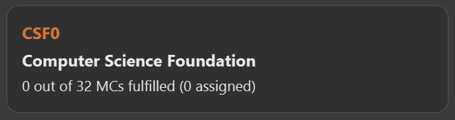
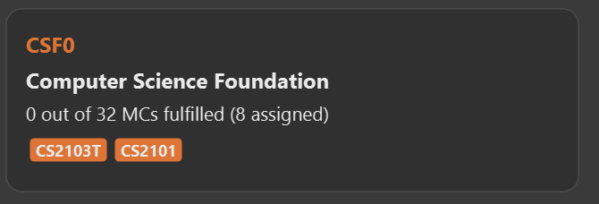
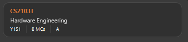

By: Team-iGrad Since: Feb 2020
- 1. Introduction
- 2. Quick Start
- 3. How to use this guide
- 4. Features
- 5. Components
- 6. Walkthrough
- 6.1. Start up the application
- 6.2. Enter your course details
- 6.3. Key in your graduation requirements
- 6.4. Add modules to the tracker
- 6.5. Assign your modules
- 6.6. Key in additional details for your modules
- 6.7. Mark a module as done and assign a grade to it
- 6.8. Track your MCs
- 6.9. View your CAP
- 6.10. Export your data
- 7. Command List
- 8. Version 2.0
- 9. FAQs
- 10. Cheat Sheet
- 11. Glossary
1. Introduction
Welcome! Thanks for choosing to use iGrad. This official iGrad User Guide will help guide you as you explore the ways you can track your graduation!
2. Quick Start
Follow the steps below to get started with iGrad:
-
Ensure that you have Java 11 installed on your computer. Java 11 is bundled together with the Java Development Kit and can be found here
-
Download our latest release!
-
Copy or move the downloaded file into an empty folder.
Ensure that the folder is empty! Doing otherwise might result in unexpected errors. -
Simply double-click on the file to begin! We hope we make tracking your graduation a breeze!
3. How to use this guide
You may proceed to Section 7, “Command List” if you would like to learn how to use each of the commands, and Section 10, “Cheat Sheet” if you would just like a list of all the commands for easy reference.
The figure below explains the symbols used throughout the user guide.
| Specifies the constraints of the command or situation. |
| Specifies expected command outcomes. |
| Specifies extra tips you can use when navigating through our app. |
| Specifies important things to take note of |
4. Features
Section by: Nathanael Seen
This segment highlights three key features iGrad offers to NUS students, namely; a Course Planner, an MCs Tracker, and a CAP Tracker.
If you would like a more in-depth overview of the actual components of our application, please refer to the next section; Section 5, “Components”, for more details.
4.1. Course Planner
iGrad was built with every NUS student in mind. Our flexible course planner allows you to plan a course of your own dreams, be it those of you doing a single degree programme, a double degree programme, and even a concurrent degree programme.
With our course planner, you would be able to enter your current course details such as your modules and the various degree requirements by which those modules are mapped.
(For instance, the Computer Science course has the various modules, highlighted in blue, and degree requirements, boxed in red):

4.2. MCs Tracker
We are sick of counting our MCs at the beginning of every semester; be it counting the total course MCs left before you can graduate, or tracking the number of MCs left for those invidual degree requirements (boxed in green, in Figure 1).
With our MCs feature, you would be able to easily keep track of how close you are to graduation, as all this information is automatically updated and recomputed, each time you have completed a certain module.
4.3. CAP Tracker
No more googling for CAP calculators. iGrad’s CAP tracker helps you keeps track of your current CAP at every step of your journey in your course. In addition, it even offers predictive features so you know how well you have to do in order to achieve your dream CAP.
4.4. Everything Integrated into One Application
But the best part is that these features are all integrated into our application; iGrad. And with all these important pieces of information in one place, you would never go amiss keeping track of all your graduation requirements.
5. Components
This segment details the various components of iGrad. As shown in Figure 2 below, these components follow a hierachical structure, exactly like how an NUS course is structured.
Here is how our application looks like (on a typical usage):
The following is the same screenshot of our application, but with the various components of our application highlighted:
As per the screenshot above (in figure 4):
-
Course is indicated in blue,
-
Degree Requirements is indicated in red, and
-
Modules is indicated in yellow
You may refer to Figure 2, if you would like a quick recap on the hierarchical structuring of these components.
5.1. Course
A course is simply a group of degree requirements.
It contains important information such as your current CAP, total number of MCs you have completed thus far, and semesters left before you can graduate.
In short, it helps you keep track of your overall degree progress.
5.2. Degree Requirements
Under a course are the various degree requirements, such as the ones shown in Figure 2 above; Computer Science Foundation, Mathematics and Sciences, and Unrestricted Electives.
Each requirement comprises of the modules you need to complete in order to fulfill that particular requirement.
Additionally, each requirement consists of important information such as the number of MCs you have already fulfilled.
5.3. Modules
Finally, modules are the basic building block of all the other components.
These could be modules you have taken, modules you are currently taking and modules that you plan to take.
Each module allows recording of other optional information, such as indicating the grade you have obtained for those modules.
6. Walkthrough
This segment details a simple tutorial on how to use the application. It provides a step-by-step guide on how to utilise the main components of the application, and covers the following:
-
Choosing an
Avatar -
Adding a
Course -
Adding a course
Requirement -
Adding a
Module -
Assigning a
Moduleto aRequirement -
Adding additional details to a
Module -
Marking as
Moduleas done and assigning aGradeto it -
Tracking your academic progress:
MCsandCAP -
Exporting your data
Here is a 10-step guide on how to use iGrad.
6.1. Start up the application
Section by: Daryl
-
Open up the application by opening the
iGrad.jarfile. -
Select an avatar by typing its name before pressing enter.
-
The avatar will act as your guide for the application.

6.2. Enter your course details
Section by: Daryl
-
Course refers to the name of the course you are currently enrolled in.
-
Enter the name of your course in the format:
course add n/COURSE_NAME s/TOTAL_SEMESTERS -
E.g.
course add n/Computer Science s/2

6.3. Key in your graduation requirements
Section by: Daryl
-
Requirements refer to degree requirements needed in the entered course.
-
Enter your course graduation requirements in the format:
requirement add t/REQUIREMENT_TITLE u/MCS_REQUIRED -
E.g.
requirement add n/General Education u/20

6.4. Add modules to the tracker
Section by: Daryl
-
Modules refer to modules that you have taken or are planning to take.
-
Enter modules into the system in the format:
module add n/MODULE_CODE t/MODULE_TITLE u/MCs -
E.g.
module add n/GER1000 t/Quantitative Reasoning u/4
6.5. Assign your modules
Section by: Daryl
-
Assign modules under their respective requirements.
-
Enter assign in the format:
requirement assign REQUIREMENT_CODE n/MODULE_CODE -
Note: Requirement codes are generated by the system.
-
E.g.
requirement assign GE0 n/GER1000
6.6. Key in additional details for your modules
Section by: Teri
-
Edit modules with additional information such as Semester. Other information that has already be input can be edited as well.
-
Enter edit to be done to the module in the format:
module edit MODULE_CODE s/SEMESTER -
Note: For Semester, it has to follow the format of
Y_S_ -
E.g.
module edit GER1000 s/Y1S1
6.7. Mark a module as done and assign a grade to it
Section by: Teri
-
A module is considered as done when a grade is assigned to it.
-
Enter grade for the module in the format:
module done MODULE_CODE g/GRADE -
E.g.
module done GER1000 g/A+

6.8. Track your MCs
Section by: Teri
-
MCs refer to Module Credits.
-
MCs are automatically tracked and updated.
-
Total MCs count is the total of all requirement MCs.
-
MCs are fulfilled when modules that are within a requirement are marked done.

6.9. View your CAP
Section by: Teri
-
CAP refers to Cumulative Average Points and is out of 5 (max).
-
CAP is automatically tracked and updated.
-
CAP is updated whenever a module within a requirement is marked done with a grade.

6.10. Export your data
Section by: Teri
-
Data of your entire study plan can to exported to a comma-separated values (.csv) file.
-
Export your data in the format:
export -
Note: Data file can be found in the same folder as this application.


7. Command List
Section by: Yijie
This section provides a detailed breakdown of the various commands you may use in iGrad. Please read Section 7.1, “Command Format” to understand how our commands work!
7.1. Command Format
Section by: Yijie
This section explains the syntax for the commands in iGrad. You may move onto Section 7.2, “Help” if you are already familiar with our syntax which involves the command word(s), prefixes, parameters, specifiers and flags.
The table below summarises the components of our syntax, using module commands as example.
| Component | Description | Example |
|---|---|---|
Command Word(s) |
Command words tell iGrad what command you are trying to perform. |
E.g. |
Prefix |
Prefixes tell iGrad what kind of information you are trying to key in.
A prefix consists of an alphabet followed by a forward slash (i.e. |
E.g. |
Parameter |
Parameters tell iGrad the information you want to key in. Parameters are specified in uppercase. Parameters come directly after a prefix, and you can chain prefix-parameters pairs. |
E.g. In |
Specifier |
Specifiers inform iGrad of the item you want to edit or delete. To differentiate them from the properties of the item you are trying to modify, they do not come with prefixes. |
E.g. In the |
Flag |
Flags tell iGrad to use a different version of the command.
Flags consist of a dash (i.e. |
E.g. |
We have also listed all the parameters and their corresponding prefixes in the table below.
If square brackets (i.e. [ ]) are specified around a parameter-prefix pair, this means
that the parameter-prefix pair is optional. However, do note that if all parameter-prefix pairs
are indicated with square brackets, this means that at least one of them must be provided. Parameter-prefix
pairs which can be entered multiple times in a single command are also indicated by ellipses
(i.e. …) behind the parameter.
| Parameter | Prefix |
|---|---|
|
|
|
|
|
|
|
|
|
|
|
|
The two flags used in iGrad are listed in the table below.
Flag |
Purpose |
|
Informs iGrad to use automated module adding by pulling data of modules from NUSMods. Only used in the ModuleAutoAdd command. |
|
Informs iGrad to use the or option when filtering modules. Only used in the ModuleFilter command. |
7.2. Help
Section by: Yijie
This command opens up a help window for easy reference on the list of commands that can be used in iGrad. A link is also provided to direct users to the user guide for more detailed explanations.
Purpose |
Opens a help window with a list of commands |
Syntax |
|
Example |
|
7.3. Course
Section by: Yijie
This section details each command used in manipulating the course. All course commands begin with the identifier
course, followed by the action, e.g. set.
All course commands use the same parameters, as listed in the table below:
| Name | Description | Example | Restrictions |
|---|---|---|---|
|
The course name |
Computer Science |
- |
|
The total number of semesters you will be spending in NUS |
8 |
Must be a number less than 100. |
If the parameter restrictions are not strictly adhered to when issuing a course command, or if iGrad cannot find what you’re looking for, you might come across a common error. The following error is generic and may be encountered when dealing with any course command:
| Parameter | Error Name |
|---|---|
|
Invalid Course Credits |
This error can be resolved by adhering to the restriction detailed in Table 5, “Course Parameters”
7.3.1. Course Set
This command sets the course.
Purpose |
Sets the course |
Syntax |
|
Example |
|
How it Works
When you type in this command, we take the values given for the COURSE_NAME and SEMESTERS
and fill in those fields for your course. We do not check if the given course refers
to actual courses in NUS. However, restrictions stated in the Requirement Parameters
table still apply.
Table 8, “Course Set Error Reference” lists errors you might encounter after issuing this command:
| Name | Message | Explanation | Solution |
|---|---|---|---|
Parameters Not Provided Error |
All fields to be filled, course set n/COURSE_NAME s/SEMESTERS |
Not all parameters needed to set the course have been provided |
Provide all parameters prepended with their prefixes |
Tutorial
Follow these steps to get a clearer idea of how this command works.
| For this tutorial, actual values will be given instead of placeholders. You may undo changes made from this tutorial by using the appropriate command. |
-
Ensure that you do not have a course yet. You may do so by deleting the existing course with the
course deletecommand. -
Type the following into the command box:
course set n/Computer Science s/8, and press enter. -
The message in the response box should change and you should see the course name and semesters updated in the top left corner panel.
7.3.2. Course Edit
This command edits the editable fields in a course which include the COURSE_NAME and SEMESTERS.
| Course name does not need to be specified. |
Purpose |
Edits the course |
Syntax |
|
Example |
|
How it Works
When you issue the command, we replace the fields provided with the given values. You are able to change the values as you wish as long as they follow the restrictions as listed in the parameters table.
Table 10, “Course Edit Error Reference” lists the errors you might encounter after issuing this command:
| Name | Message | Explanation | Solution |
|---|---|---|---|
Parameters Not Provided Or Not Modified |
At least one field to edit must be provided |
Parameters needed to edit the course are not provided |
Try specifying either the name or the credits, or provide a value that is different from the existing one |
Tutorial
| For this tutorial, actual values will be given instead of placeholders. You may undo or delete objects created from this tutorial by using the appropriate commands. |
-
Ensure that you have a course set.
-
Type the following into the command box:
course edit n/Computer Science s/8, and press enter. -
The message in the response box should change and you should see the course name and semesters updated in the top left corner panel.
7.3.3. Course Delete
This command deletes the course as well as all other information stored in iGrad. Please use with caution!
| Course name does not need to be specified. |
Purpose |
Deletes the course |
Syntax |
|
Example |
|
Tutorial
| You may undo changes made from this tutorial by using the appropriate command. |
-
Ensure that you have a course set.
-
Type the following into the command box:
course delete, and press enter. -
The message in the response box should change and you should see the course name and semesters disappear, as well as all other information in iGrad.
7.4. Requirement
Section by: Yijie
This section details each command used in manipulating requirements. All requirement commands begin with the identifier
requirement, followed by the action, e.g. add.
All requirement commands use the same parameters, as listed in the table below:
| Name | Description | Example | Restrictions |
|---|---|---|---|
|
A requirement’s unique identifier, automagically generated by iGrad based on the requirement title |
CSF0 |
- |
|
A requirement’s title |
Computer Science Foundation |
Must contain at least one alphabet |
|
The number of modular credits needed to fulfill the requirement |
32 |
Must be a positive number less than or equal to 10,000 |
|
A module’s module code, used when assigning or unassigning modules to and from a requirement |
CS2103T |
Detailed restrictions are specified here, but the requirement-specific restriction is that the module must already be added to iGrad. |
If the parameter restrictions are not strictly adhered to when issuing a requirement command, or if iGrad cannot find what you’re looking for, you might come across some common errors. The following errors are generic and may be encountered when dealing with any requirement command:
| Parameter | Error Name |
|---|---|
|
Invalid Requirement Code |
|
Invalid Requirement Title |
|
Invalid Requirement Credits |
These errors can all be resolved by adhering to the restrictions detailed in Table 12, “Requirement Parameters”
7.4.1. Requirement Add
This command adds a requirement to the requirement list.
Purpose |
Adds a requirement |
Syntax |
|
Example |
|
How it Works
When you type in this command, we take the values given for the REQUIREMENT_TITLE and REQUIREMENT_CREDITS
and fill in those fields for your requirement. We do not check if the given requirement title or credits refer
to actual requirements as stated on NUS websites. However, restrictions stated in the
Requirement Parameters table still apply.
Table 15, “Requirement Add Error Reference” lists errors you might encounter after issuing this command:
| Name | Message | Explanation | Solution |
|---|---|---|---|
Parameters Not Provided Error |
Added requirement must be provided with arguments t/TITLE u/CREDITS |
Not all parameters needed to add a requirement are provided |
Provide all parameters prepended with their prefixes |
Tutorial
Follow these steps to get a clearer idea of how this command works.
| For this tutorial, actual values will be given instead of placeholders. You may undo changes made from this tutorial by using the appropriate command. |
-
Type the following into the command box:
requirement add t/Computer Science Foundation u/32, and press enter -
The message in the response box should change and you should see the following in the requirement panel:
Figure 5. Requirement "Computer Science Foundation" successfully added
7.4.2. Requirement Edit
This command edits the editable fields in a requirement which include the REQUIREMENT_TITLE and REQUIREMENT_CREDITS.
The REQUIREMENT_CODE is not editable as it is a unique identifier assigned by iGrad.
Purpose |
Edits a requirement |
Syntax |
|
Example |
|
How it Works
| Please type the requirement code in uppercase. |
When you issue the command, we replace the fields provided with the given values. You are able to change the values as you wish as long as they follow the restrictions as listed in the parameters table.
Table 17, “Requirement Edit Error Reference” lists the errors you might encounter after issuing this command:
| Name | Message | Explanation | Solution |
|---|---|---|---|
Requirement Not Found Error |
The requirement code provided is invalid |
The requirement you are attempting to edit does not exist |
Try changing the requirement code to one that you can find in the list, or add a new one instead |
Parameters Not Provided Or Not Modified |
At least one field to edit must be provided |
Parameters needed to edit the requirement are not provided |
Try specifying either the title or the credits, or provide a value that is different from the existing one |
Tutorial
| For this tutorial, actual values will be given instead of placeholders. You may undo or delete objects created from this tutorial by using the appropriate commands. |
-
Ensure that you have the requirement "Computer Science Foundation", coded CSF0, in the list.
-
Type the following into the command box:
requirement edit CSF0 t/Engineering Foundation u/40, and press enter. -
The message in the response box should change and you should see the following updated in the list:
 Figure 6. Requirement "Computer Science Foundation" successfully edited
Figure 6. Requirement "Computer Science Foundation" successfully edited
7.4.3. Requirement Delete
This command deletes a requirement from the list.
Purpose |
Deletes a requirement |
Syntax |
|
Example |
|
How it Works
The requirement that you wish to delete is completely removed from the list.
Restoring the requirement is only possible using the undo command which would only work if delete was the last issued command.
|
Table 19, “Requirement Delete Error Reference” lists the errors you might encounter after issuing this command:
| Name | Message | Explanation | Solution |
|---|---|---|---|
Requirement Not Found Error |
The requirement code provided is invalid |
The requirement you are attempting to delete does not exist in the list |
Your problem is your solution! |
Tutorial
| For this tutorial, actual values will be given instead of placeholders. You may undo objects deleted from this tutorial by using the appropriate command. |
-
Ensure that you have the requirement with requirement code "CSF0" in the list.
-
Type the following into the command box:
requirement delete CSF0, and hit enter. -
The message in the response box should change and you should see that the requirement CSF0 disappears from the list.
7.4.4. Requirement Assign
This command assigns one or more than one module to a requirement.
Purpose |
Assigns module(s) to a requirement |
Syntax |
|
Example |
|
How it Works
| The module must already be added in iGrad for this command to work! Refer to Section 7.5.1, “Module Add” to find out how to add a module. |
Table 21, “Requirement Assign Error Reference” lists the errors you might encounter after issuing this command:
| Name | Message | Explanation | Solution |
|---|---|---|---|
Requirement Not Found Error |
The requirement code provided is invalid |
The requirement you are attempting to assign to does not exist |
Try changing the requirement code to one that you can find in the list |
Module Not Found Error |
The module does not exit in system |
The module you are attempting to assign does not exist |
You need to first add the module! |
Module Already Assigned Error |
The module is already assigned under the requirement |
The module has been assigned to the requirement |
Try assigning a different module instead |
Tutorial
| For this tutorial, actual values will be given instead of placeholders. You may undo changes made from this tutorial by using the appropriate command. |
-
Ensure that you have the requirement "Computer Science Foundation", coded CSF0, in the list.
-
Type the following into the command box:
requirement assign CSF0 n/CS2103T n/CS2101, and press enter. -
The message in the response box should change and you should see the following updated in the list:
Figure 7. Modules successfully assigned to requirement "Computer Science Foundation"
7.4.5. Requirement Unassign
This command unassigns one or more than one module from a requirement.
Purpose |
Unassign module(s) from a requirement |
Syntax |
|
Example |
|
How it Works
| The module must already be assigned to the requirement for this command to work! |
Table 23, “Requirement Unassign Error Reference” lists the errors you might encounter after issuing this command:
| Name | Message | Explanation | Solution |
|---|---|---|---|
Requirement Not Found Error |
The requirement code provided is invalid |
The requirement you are attempting to unassign from does not exist |
Try changing the requirement code to one that you can find in the list |
Module Not Found Error |
The module does not exit in system |
The module you are attempting to unassign does not exist |
You can add the module if you want |
Tutorial
| For this tutorial, actual values will be given instead of placeholders. You may undo changes made from this tutorial by using the appropriate command. |
-
Ensure that you have the requirement "Computer Science Foundation", coded CSF0, in the list, with modules CS2103T and CS2101 assigned to it.
-
Type the following into the command box:
requirement unassign CSF0 n/CS2103T n/CS2101, and press enter. -
The message in the response box should change and you should see the modules disappear from the requirement.
7.5. Module
Section by: Wayne
This section details each command used to manipulate modules. All module commands begin with the identifier
module followed by the action e.g. add.
All module commands use the same parameters, listed in the table below:
| Name | Description | Example | Restrictions |
|---|---|---|---|
|
A module’s unique identifier |
CS2103T |
Must have two letters in the front, four numbers in the middle with an optional letter at the back |
|
A module’s title |
Software Engineering |
- |
|
The number of modular credits a module is worth |
4 |
Must be a number |
|
An academic semester. There are two semesters in a year |
Y1S1 |
Must be in the format Y?S* where ? represents a digit from 0 - 4 and * represents a digit from 1 -2 |
|
A module’s grade |
A+ |
Must be one of the following: A+, A, A-, B+, B-, C+, C, D, D+, F, S, U |
If, when issuing a command, the parameter restrictions are not strictly adhered to, you might come across some common errors. The following errors are generic and may be encountered when dealing with any module command:
| Parameter | Error Message |
|---|---|
|
The Module Code provided for the module is invalid! |
|
The Module Credits provided for the module is invalid! |
|
The Semester provided for the module is invalid! |
|
The Grade provided for the module is invalid! |
These errors can all be resolved by adhering to the restrictions detailed in Table 24, “Module Parameters”
7.5.1. Module Add
Section by: Wayne
This command adds a module to the module list.
Purpose |
Adds a module |
Syntax |
|
Example |
|
How it Works
When you type in this command, we take the given values for the MODULE_CODE, MODULE_TITLE, MODULE_CREDITS and optionally, the SEMESTER,
and fill in those fields. We do not check if the given MODULE_CODE or MODULE_TITLE refer to actual modules offered by NUS. However, the restrictions stated in the module parameters table still apply.
Table 27, “Module Add Error Reference” lists errors you might encounter after issuing this command:
| Name | Message | Explanation | Solution |
|---|---|---|---|
Duplicate Module Error |
Sorry, this module already exists in the course book. |
The module you are attempting to add already exists in the module list |
Delete the existing module in the list and try again |
Tutorial
Follow these steps to get a clearer idea of how this command works
| For this tutorial, actual values will be given instead of placeholders. Undo or Delete objects created from this tutorial by using the appropriate commands |
-
Check that you do not have the modules with
MODULE_CODECS2103T and CS2101 in your list of modules -
Type the following into the command box
module add n/CS2103T u/4 t/Software Engineeringand press enter -
Type the following into the command box
module add n/CS2101 u/4 t/Effective Communication for Computing Professionalsand press enter -
The message in the response box should change and you should see the following in the module panel:
 Figure 8. Modules CS2103T and CS2101 successfully added
Figure 8. Modules CS2103T and CS2101 successfully added
7.5.2. Module Auto Add
Section by: Wayne
This command adds a module to the module list. The module information is taken
from the NUSMods API and includes the MODULE_CODE, MODULE_TITLE
and MODULE_CREDITS.
Purpose |
Adds a module from NUSMods |
Syntax |
|
Example |
|
How it Works
Do not miss out the -a flag
|
When you type in this command, a request is made to NUSMods API. More specifically, we visit the module page and ask for the information provided there. An example page can be found here.
| We try to get the module information from the current academic year. However, this might not always be possible as NUS might not have released the module details. As a contingency, we retrieve the module information from the previous academic year. |
In general, using this command speeds up the process of module addition greatly. However, as we have to make a request to an external webpage, the time taken to process the request might be considerably longer.
| After issuing the command, the app might seem to freeze. Not to worry! It is merely processing your request. Please be patient when executing this command, especially when attempting to add a large number of modules. |
This command also supports batch processing and you can add multiple modules, with the necessary information all filled in, by issuing a single command. In the case where adding a single module in a batch of modules raises an error, we skip that module and let you know what went wrong.
You can add up to 10 modules at once! Try this: module add n/CS1101 n/CS1231 n/CS2030 n/CS2040 n/CS2100 n/CS2103T n/CS2105 n/CS2106 n/CS3230 n/CS3219 -a
|
Table 29, “Module Auto Add Error Reference” lists the errors you might encounter after issuing this command:
| Name | Message | Explanation | Solution |
|---|---|---|---|
Duplicate Module Error |
Duplicate Detected |
Sorry, this module already exists in the course book. |
Delete the existing module in the list and try again |
Module Not Found Error |
Module Not Found |
Sorry, I was unable to find this module. Is your internet down? |
Use the command Section 7.5.1, “Module Add” instead |
Module Overload Error |
Module Overload Error |
Please do not attempt to add more then 10 modules. |
Divide the list of modules into smaller batches of size less than 10 and try again |
Connection Error |
Connection Error |
Sorry, I was unable to find this module. Is your internet down? |
Whilst all other commands work offline. You need an internet connection to issue this command. Go online before trying again |
Tutorial
Follow these steps to get a clearer idea of how this command works
| For this tutorial, actual values will be given instead of placeholders. Undo or Delete objects created from this tutorial by using the appropriate commands |
-
Check that you do not have the modules with
MODULE_CODECS2103T and CS2101 in your list of modules -
Type the following into the command box
module add n/CS2103T n/CS2101 -aand press enter -
Wait for up to 5 seconds
-
The message in the response box should change and you should see the following in the module panel
Figure 9. Modules CS2103T and CS2101 successfully added from NUSMods
Additional Information
We are also able to retrieve information pertaining to a module’s prerequisites and preclusions. However, as our app can function as a module planner in addition to tracking your graduation requirements, we do not prevent you from adding modules that have unfulfilled prerequisites but instead, simply show a warning.
| As the prerequisites and preclusions from NUSMods do not follow any standard formatting, the warning messages shown might not always be accurate. This is due to a difficulty of interpreting the data given by NUSMods. This remains a BETA feature and we hope to upgrade it in time. ==== Module Done Section by: Wayne |
This command marks a module as done by giving it a grade and optionally, a semester.
Purpose |
Marks a module as done |
Syntax |
|
Example |
|
How it Works
When you issue the command, we give your module the grade, and optionally the semester, that you provided. This helps us keep track of both your CAP and the number of semesters you have left before graduating.
In order to calculate your CAP, we use a known algorithm which is guaranteed to be accurate. To see what semester you are currently at, we take the latest semester given to a module which has been marked as done. From that, we are able to tell you how many semesters you have left.
| We do not currently allow the input of special terms. As a workaround, for modules taken during special term, you could input the most recent semester instead |
Table 31, “Module Done Error Reference” lists the errors you might encounter after issuing this command:
| Name | Message | Explanation | Solution |
|---|---|---|---|
Module Not Found Error |
Sorry, I was unable to find this module. |
The module you are attempting to mark as done does not exist in the module list |
Add the module you wish to mark as done and try again |
Tutorial
| For this tutorial, actual values will be given instead of placeholders. Undo or Delete objects created from this tutorial by using the appropriate commands |
Ensure that you have the module CS2103T in the module list
-
Type the following into the command box
module done CS2103T g/A s/Y4S1 -
The message in the response box should change and you should see the following
 Figure 10. Modules CS2103T successfully given a grade and a semester
Figure 10. Modules CS2103T successfully given a grade and a semester
7.5.3. Module Edit
Section by: Wayne
This command edits the editable fields in a module which include the MODULE_TITLE, MODULE_CREDITS, SEMESTER.
Although it is possible to edit the fields as listed, it is unadvisable unless you made a mistake while keying
in the values.
Purpose |
Edits a module |
Syntax |
|
Example |
|
How it Works
When you issue the command, we replace the fields provided with the given values. You are able to change the values as you wish as long as they follow the restrictions as listed in the parameters table.
Table 33, “Module Edit Error Reference” lists the errors you might encounter after issuing this command:
| Name | Message | Explanation | Solution |
|---|---|---|---|
Module Not Found Error |
Sorry, I was unable to find this module |
The module you are attempting to edit does not exist in the module list |
Instead of editing a module that does not exist, try adding a new one! |
Tutorial
| For this tutorial, actual values will be given instead of placeholders. Undo or Delete objects created from this tutorial by using the appropriate commands |
Ensure that you have the module CS2103T in the module list
-
Type the following into the command box
module edit CS2103T t/Hardware Engineering s/Y1S1 u/8 -
The message in the response box should change and you should see the following
Figure 11. Modules CS2103T successfully given a grade and a semester
7.5.4. Module Delete
Section by: Wayne
This command deletes a module from the module list.
Purpose |
Deletes a module |
Syntax |
`module delete MODULE_CODE`https://xxx[] |
Example |
|
How it Works
The module that you wish to delete is completely removed from the module list.
Restoring the module is only possible using the undo command which would only work if delete was the last issued command.
|
Table 35, “Module Delete Error Reference” lists the errors you might encounter after issuing this command:
| Name | Message | Explanation | Solution |
|---|---|---|---|
Module Not Found Error |
Sorry, I was unable to find this module |
The module you are attempting to delete does not exist in the module list |
Your problem is your solution! |
Tutorial
| For this tutorial, actual values will be given instead of placeholders. Undo or Delete objects created from this tutorial by using the appropriate commands |
Ensure that you have the module CS2103T in the module list
-
Type the following into the command box
module delete CS2103T -
The message in the response box should change and you should see that the module CS2103T disappears from the module list
7.5.5. Module Filter
Section by: Wayne
This command allows you to find your modules by various parameters. You can filter the
complete module list by SEMESTER, MODULE_CREDITS and GRADE.
Purpose |
Displays a module list filtered based on the given parameters |
Syntax |
|
Example |
|
How it Works
Two options are provided for you:
[Option 1] Displays modules that match all provided parameters
or
[Option 2] Displays modules that match at least one of the provided parameters.
If the flag -o is included at the end of the command, Option 2 will be chosen. Otherwise, the default option is Option 1.
In order to display all modules once again, simply type module filter. This will display an unfiltered module list containing all modules.
|
There are no notable errors to list. If wrong parameters are given, the app will simply
display the unfiltered module list. However, you should always take note of what filters are currently in place. If you
are unable to find some modules after using this command, please reset the display by typing in module filter.
If you
are unable to find some modules after using this command, please reset the display by typing in module filter.
|
Tutorial
Ensure that the following modules are in the module list:
| Module Code | Credits | Semester | Grade |
|---|---|---|---|
CS2103T |
4 |
Y1S1 |
A |
CS2101 |
4 |
Y1S2 |
B |
CS2040 |
6 |
Y2S1 |
C |
-
Retrieving modules which have 4
CREDITS-
Type
module filter u/4into the command box -
The message in the response box should change and you should see the modules CS2103T and CS2101 in the module panel
-
-
Retrieving modules which have either
SEMESTERY1S2 orGRADEC-
Type
module filter s/Y1S1 g/B -o -
The message in the response box should change and you should see the modules CS2101 and CS2040 in the module panel
-
Additional Information
| This section contains information which requires prior knowledge of discrete mathematics or more specifically, logical operators |
The flag -o, is present, sets the logical operator used in concatenating the parameters as "or". The default logical operator used is "and".
7.6. Export
Section by: Wayne
This command exports your data to a comma-separated values (.csv) file. This file can then be submitted to the relevant administration for processing of Leave of Absence (LOA), exchange programmes or internship applications.
Purpose |
Exports your data to a .csv file |
Syntax |
|
Example |
|
How it Works
We write your data to a .csv file study_plan.csv using the modules you have added and include the fields MODULE_CODE, MODULE_TITLE, SEMESTER and CREDITS.

| Modules that have not been tagged with a semester will not be written |
After issuing the command, you will be able to find the file in the same folder as the app’s executable.
| For example, if the app is stored in your Desktop folder, the file study_plan.csv will be created in the Desktop folder as well |
Table 38, “Export Error Reference” lists the errors you might encounter after issuing this command:
| Name | Message | Explanation | Solution |
|---|---|---|---|
Write Error |
Unable to write to file |
Sorry, I was unable to export data to CSV file. Please ensure that you do not have the file 'study_plan.csv' open |
Close the file and try again |
Data Not Found Error |
Sorry, I couldn’t find any modules that are tagged to a semester! I can only export modules that are tagged with a semester. |
You do not have any modules tagged with a semester |
Tag at least one module with a semester and try again |
8. Version 2.0
Section by: Wayne
This sections details features that would be packaged with the next release
8.1. Module Suggester
Section by: Wayne
Using tried and tested recommendation algorithms such as collborative filtering, we would be able to automatically suggest to you what modules to take next.
Purpose |
Suggests modules to take |
Syntax |
|
Example |
|
8.2. Integration with NUSMods
Section by: Wayne
We plan to integrate with popular timetabling application NUSMods so that you can manage all aspects of your academics in one place.
9. FAQs
I’m not an NUS student. Can I still use iGrad?
As long as your university follows a similar hierachical structure! However, we will be unable to provide features such as validation from NUSMods.
Do I require an online connection to use iGrad?
Nope! iGrad may be used offline. However, our validation feature which utilises NUSMods would be unavailable, and you’ll have to key in your module details manually.
Where can I get the icons for the avatars?
The avatar icons were obtained from Freepik. All credits go to the original creator.
10. Cheat Sheet
Section by: Daryl
This segment contains a consolidated view of all the commands utilised in iGrad. Commands are split into the following
categories:
-
Essential Commands
-
Course Commands
-
Requirement Commands
-
Module Commands
10.1. Essential Commands
| Description | Command |
|---|---|
Open the help window |
|
Undo last command |
|
Export data |
|
Exit the application |
|
10.2. Course Commands
| Description | Command |
|---|---|
Add a |
|
Edit the |
|
Delete the |
|
Find out |
|
10.3. Requirement Commands
| Description | Command |
|---|---|
Add a |
|
Edit a |
|
Delete a |
|
Assigns the |
|
10.4. Module Commands
| Description | Command |
|---|---|
Add a |
|
Edit a |
|
Delete a |
|
Mark a |
|
11. Glossary
| Terms | Definition |
|---|---|
Course |
A course is the entire programme of studies required to complete a university degree |
Graduation requirement |
Requirements specified by the university in order for a student to graduate |
Module |
Each module of study has a unique module code consisting of a two- or three-letter prefix that generally denotes the discipline, and four digits, the first of which indicates the level of the module |
Cumulative Average Point (CAP) |
The Cumulative Average Point (CAP) is the weighted average grade point of the letter grades of all the modules taken by the students. |
Semester |
A semester is a part of the academic year. Each semester typically lasts 13 weeks in NUS. |
Modular Credits (MCs) |
A modular credit (MC) is a unit of the effort, stated in terms of time, expected of a typical student in managing his/her workload. |
NUSMods |
A timetabling application built for NUS students, by NUS students. Much like this iGrad! |